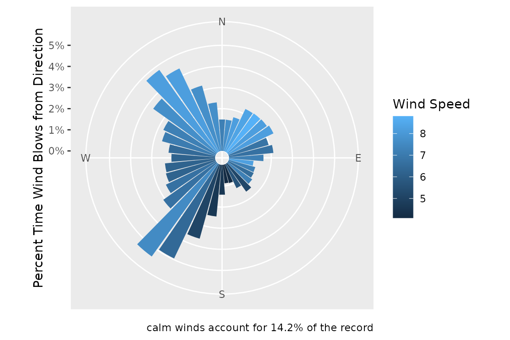
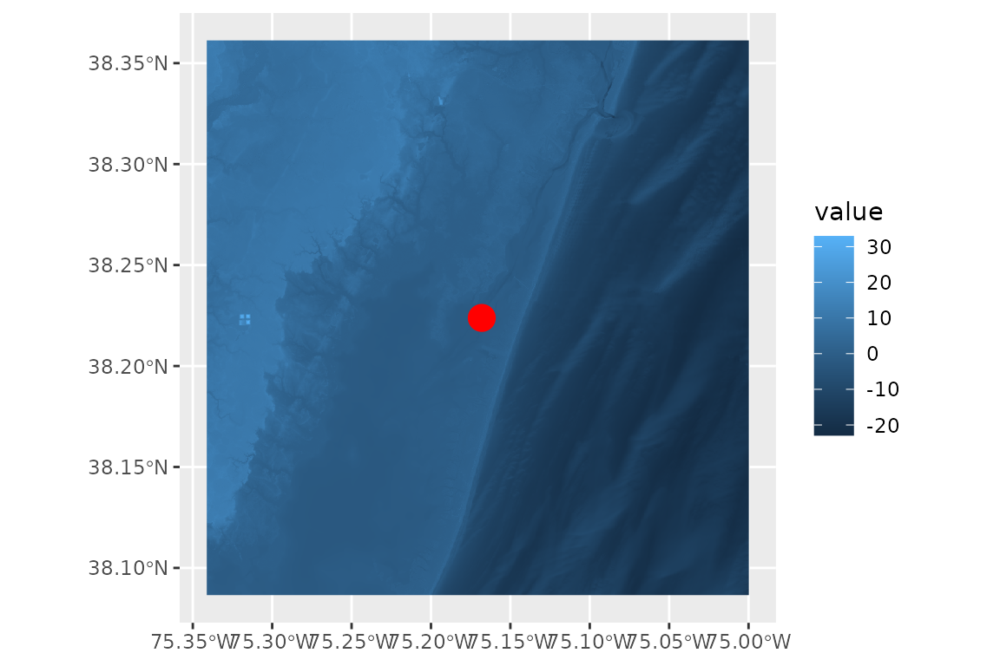
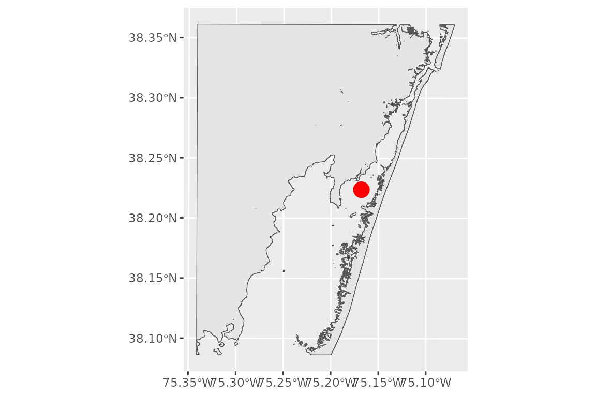
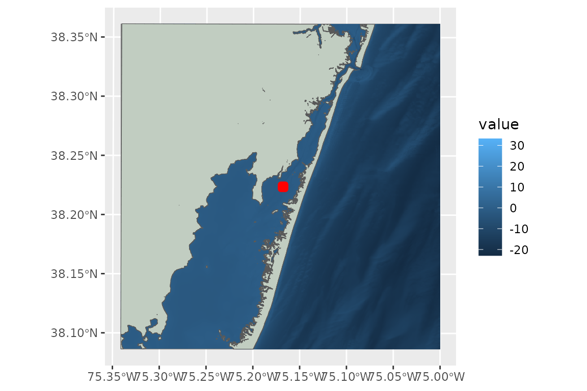
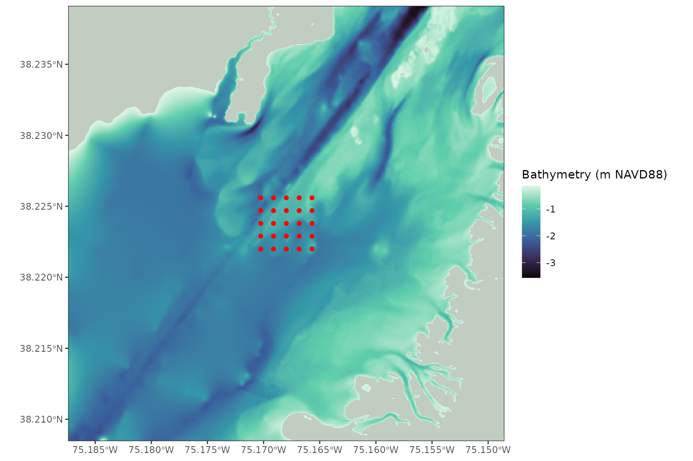

Overview
Before running WEMo simulations, you must gather the necessary spatial and environmental input data. This article introduces the WEMo functions used to:
- Download and clean wind history data
- Download bathymetry data
- Generate a shoreline from the bathymetry
- Generate points in a regularly spaced grid
Many of the functions here allow users to easily find, download and use publicly available data, but these should not be viewed as the only source that users can or should use to run the model. There are many other sources of public data that may be better suited for your question or perhaps collecting your own data may be the best. WEMo is flexible to use whatever data you’d like.
This article will focus on acquiring data using the tools in the WEMo
package, but WEMo can also be run on data from other sources. Spatial
data like shapefiles and geotifs can be easily read with R using
packages sf
(for simple features i.e. shapefiles) and terra (for
rasters and shapefiles). Both packages are well developed and plenty of
help is available online.
Gather input data
First, ensure the latest version of WEMo is downloaded
# Ensure you have the remotes package installed, if not download and install it
if(!require(remotes)) install.packages("remotes")
# Download the latest version of WEMo from github
remotes::install_github("MSE-NCCOS-NOAA/WEMo")Then load the necessary libraries
Define Site Point
To demonstrate the process of gathering and preparing data for WEMo, we’ll collect data for an example analysis in Sinepuxent Bay near Assateague Island National Seashore, Maryland.
# create a point at an area of interest in Sinepuxent Bay Maryland
site_point <- st_as_sf(
data.frame(lon = -75.168008, lat = 38.223823),
coords = c("lon", "lat"),
crs = 4326 # WGS 84
)Wind Data
Use get_wind_data() to retrieve and download wind
observations from the NOAA Integrated Surface Database (ISD). The
returned data frame includes timestamps, wind speed (m/s), and direction
(degrees).
# download wind data from 2020 - 2023 from the closest station to our point
wind_data <- get_wind_data(site_point, 2020:2023, which_station = 1)
#> Using 1st closest GHCN station
#> station: USW00093786 OCEAN CITY MUNI AP, (38.3092, -75.1233), 10.3 km from site_point
# examine the first few rows of downloaded wind_data
head(wind_data)
#> # A tibble: 6 × 7
#> station_id time year month day wind_direction wind_speed
#> <fct> <dttm> <dbl> <dbl> <int> <dbl> <dbl>
#> 1 USW00093786 2020-01-01 00:00:00 2020 1 1 220 3.1
#> 2 USW00093786 2020-01-01 01:00:00 2020 1 1 220 3.6
#> 3 USW00093786 2020-01-01 02:00:00 2020 1 1 240 4.1
#> 4 USW00093786 2020-01-01 03:00:00 2020 1 1 240 5.1
#> 5 USW00093786 2020-01-01 04:00:00 2020 1 1 310 2.6
#> 6 USW00093786 2020-01-01 05:00:00 2020 1 1 310 2.1The which_station variable indicates to download the
data from the nth closest station to your point. Usually you’ll want the
closest station (which_station = 1), but that might not
always be true. For example, if the years of interest are missing or the
closest station is not representative of your site.
Setting which_station to "ask" provides a
list and an interactive map of the 5 closest stations and allows you to
choose which you’d like.
wind_data <- get_wind_data(site_point, 2020:2024, which_station = "ask")Choose a met station
Available stations:
1: 745946-93786 OCEAN CITY MUNICIPAL ARTP (10.3 km), 2006-01-01 to 2025-07-16
2: 998211-99999 OCEAN CITY INLET (12.7 km), 2008-09-15 to 2025-07-14
3: 723980-93720 SALBRY-OCN CTY WICO RGNL AP (32.8 km), 2005-01-01 to 2025-07-16
4: 724020-93739 WALLOPS FLIGHT FACILITY AIRPORT (41.2 km), 1973-01-01 to 2025-07-16
5: 724093-13764 SUSSEX COUNTY AIRPORT (54.5 km), 2006-01-01 to 2025-07-16
Type your selection and hit ENTER.
NOTE:get_wind_data() uses the package
worldmet https://openair-project.github.io/worldmet/ to access
NOAA Integrated Surface Database (ISD) meteorological observations
data.
For general information of the ISD see https://www.ncei.noaa.gov/products/land-based-station/integrated-surface-database
Summarizing Wind Data
WEMo expects a summary of wind history not raw observations.
This summarized history must include:
direction: The direction from which the wind blows (degrees off North, like a compass)proportion: Fraction of time wind comes from each directionspeed: Wind speed used for wave generation (e.g., mean or percentile)
The function summarize_wind_data() prepares data
gathered from the get_wind_data() function to be used in
WEMo.
# create a vector from 0 to 350 by 10 to snap the input wind_directions to
wanted_directions <- seq(from = 0, to = 350, by = 10)
# calculate the 95th percentile wind speed every 10 degrees
wind_data_summary <- summarize_wind_data(
wind_data = wind_data,
wind_percentile = 0.95,
directions = wanted_directions
)
head(wind_data_summary)
#> # A tibble: 6 × 4
#> direction n proportion speed
#> <dbl> <int> <dbl> <dbl>
#> 1 0 504 1.49 7.2
#> 2 10 504 1.49 7.7
#> 3 20 558 1.65 8.2
#> 4 30 745 2.21 8.42
#> 5 40 753 2.23 8.8
#> 6 50 764 2.26 8.2
# make a wind rose
plot_wind_rose(wind_data_summary)
Input wind_direction values are coerced into values 0 -
359.9. The function can further snap input wind_directions
to a user supplied vector of suitable directions
(directions). Input wind_directions are
rounded to the nearest value in directions. This is often
necessary with input data from public data sets that have occasional
anomalous readings. If directions is not supplied the
output is based on all unique values in
wind_data$wind_direction.
The function will accept wind_percentile values from 0
to 1 or "mean". The returned speed value
indicates the corresponding stat of all observations from that
direction.
NA values in the
wind_direction column indicate calm data
if the wind_speed column is 0. However,
NA values in the wind_speed
column are considered bad data and are removed when
wind_speed_na.rm = TRUE (the default).
Saving Wind Data
You can save wind data to as a csv file to be used with other analyses.
# Check if "data" folder exists, create if not
if (!dir.exists("data")) {
dir.create("data")
}
# save the wind data as a .csv file
write.csv(wind_data, file = "data/wind_data.csv")
# save the summarized wind data
write.csv(wind_data_summary, file = "data/wind_data_summary_.csv")Bathymetry
There are plenty of sources of bathymetric data and it would be impossible to discuss them all here, however NOAA’s Bathymetric Data Viewer (https://www.ncei.noaa.gov/maps/bathymetry/) offers an easy to access and interactive viewer to find some of the best publicly available datasets.
WEMo contains a convenience function
get_noaa_cudem() to fetch bathymetric data from NOAA’s
Continuously Updated Digital Elevation Model (CUDEM). This function
accesses data from NOAA’s Continuously Updated Digital Elevation Model
(CUDEM), specifically the 1/9 Arc-Second Resolution (approx. 3 meter)
Topobathymetric dataset https://chs.coast.noaa.gov/htdata/raster2/elevation/NCEI_ninth_Topobathy_2014_8483/.
This function takes a input point and radius and downloads topo-bathy
.tif raster tiles that intersect that radius.
# extract lon and lat from our site_point
lon = sf::st_coordinates(site_point)[1]
lat = sf::st_coordinates(site_point)[2]
# download, mosaic and crop CUDEM rasters for our area of interest
bathy <- get_noaa_cudem(
lon = lon,
lat = lat,
radius_m = 15000,
dest_dir = "data/NOAA_CUDEM",
mosaic_and_crop = TRUE,
output_file = "Sinepuxent_Bathy_Cropped.tif",
overwrite = F
)
#> Downloading: https://noaa-nos-coastal-lidar-pds.s3.us-east-1.amazonaws.com/dem/NCEI_ninth_Topobathy_2014_8483/chesapeake_bay/ncei19_n38x25_w075x25_2019v1.tif
#> Downloading: https://noaa-nos-coastal-lidar-pds.s3.us-east-1.amazonaws.com/dem/NCEI_ninth_Topobathy_2014_8483/chesapeake_bay/ncei19_n38x25_w075x50_2019v1.tif
#> Downloading: https://noaa-nos-coastal-lidar-pds.s3.us-east-1.amazonaws.com/dem/NCEI_ninth_Topobathy_2014_8483/chesapeake_bay/ncei19_n38x50_w075x25_2019v1.tif
#> Downloading: https://noaa-nos-coastal-lidar-pds.s3.us-east-1.amazonaws.com/dem/NCEI_ninth_Topobathy_2014_8483/chesapeake_bay/ncei19_n38x50_w075x50_2019v1.tif
#> Download complete
#> |---------|---------|---------|---------|=========================================
#> Cropped mosaic saved to: data/NOAA_CUDEM/Sinepuxent_Bathy_Cropped.tif
# plot the cropped raster in relation to our site point
ggplot() +
geom_spatraster(data = bathy) +
geom_sf(data = site_point, color = 'red', size = 5)
#> <SpatRaster> resampled to 501015 cells.
The CUDEM dataset accessed by this function covers select areas of the United States, including:
- The East Coast
- The Gulf Coast
- The San Francisco Bay
- Part of the Oregon Coast and the Washington Coast
- The Puget Sound, Washington
- Portions of Cook Inlet, Alaska
Additional CUDEM products, with varying spatial resolutions and geographic extents, are available at: https://www.ncei.noaa.gov/products/coastal-elevation-models
With mosaic_and_crop = TRUE the function will stitch
together the downloaded rasters and crop them to an area defined by the
radius_m. This is useful for speeding up processing time by
keeping the inputs to WEMo as small as possible.
With radius_m = 15000 all topo-bathy data that is within
15,000 meters of our point is fetched. This value was chosen so that the
default max fetch distance that WEMo uses (10,000) will be covered by
the raster after additional points in a grid of points 500 by 500 meters
around this point is created further down the workflow. [need editing
for clarification here?]
With overwrite = TRUE all intersecting rasters will be
re-downloaded even if they are already present in the folder. Set
overwrite = FALSE to skip re-downloading and increase
speed.
NOTE: that dest_dir will create a folder in your
working directory if one with that name doesn’t exist. You can use
getwd() to determine where your working directory is. You
can also include the full path to your desired folder if that isn’t in
your working directory. The cropped mosaic raster is also saved to
dest_dir.
Project Bathymetry
The raster generated from get_noaa_cudem() is
un-projected (WGS84). WEMo requires a projected coordinate reference
system with units in meters. We’ll convert the bathy to a local UTM grid
(18N for our site in Sinepuxent Bay, Maryland)
# Convert to UTM Zone 18N EPSG:26918
bathy <- terra::project(
bathy,
"epsg:26918",
filename = "data/Sinepuxent_Bathy_Cropped_UTM.tif",
overwrite = T
)Shoreline
Once you have bathymetry data, use
generate_shoreline_from_bathy() to generate a shoreline
based on a user defined elevation contour. We’ll use Mean Sea Level at a
nearby NOAA Water Level Station: Ocean
City Inlet, MD (Station ID: 8570283) to draw the shoreline for the
analysis.
# MSL at Ocean City Inlet - for the shoreline definition and for use later in the workflow
water_level <- -0.141 # meters NAVD88 (match the bathy data)
# Generate Shoreline and save output to file
shoreline <- generate_shoreline_from_bathy(
bathy = bathy,
contour = water_level,
save_output = TRUE,
filename = "data/Shoreline_MSL.shp"
)
#> |---------|---------|---------|---------|========================================= |---------|---------|---------|---------|=========================================
# plot the shoreline
ggplot() +
geom_sf(data = shoreline) +
geom_sf(data = site_point, color = 'red', size = 5)
This shoreline will define the maximum extent of the fetch rays that WEMo calculates. Selecting the proper contour to draw the polygon is critical to your analysis workflow and depends on your question. You can find a listing of stations and their published datums from NOAA CO-OPS’ National Water Level Observation Network online: https://tidesandcurrents.noaa.gov/stations.html?type=Datums. Additionally NOAA’s vdatum tool will produce datums for your area as well: https://vdatum.noaa.gov/.
Be sure to match the units and vertical datum to your bathymetry
data. Bathymetry data from get_noaa_cudem() is in meters
relative to NAVD88.
Grid of Points
Use generate_grid_points() to generate a rectangular
grid of points. These are the points where WEMo will simulate wave
exposure.
# convert the site_point to a utm grid to work with meters
site_point <- sf::st_transform(site_point, crs = 26918) # NAD83 / UTM zone 18N
# create a grid of points 500 x 500 meters with points every 100 meters
grid_points <- generate_grid_points(
site_point = site_point,
expansion_dist = 500,
resolution = 100
)
# plot the grid with the original site point
ggplot() +
geom_sf(data = grid_points)+
geom_sf(data = site_point, color = 'red', size = 5)
If expansion_dist or resolution is a vector
of length 2 the x and y expansion distances or grid resolution are set
independently.
Plotting
Create a plot with all the inputs together
ggplot() +
geom_spatraster(data = bathy) +
geom_sf(data = shoreline, fill = "honeydew3") +
geom_sf(data = grid_points, color = 'red')
#> <SpatRaster> resampled to 501215 cells.
All the inputs align, but it is difficult to see our points and the bathymetry color scale is stretched out by the high elevation cells on land and the low elevation cells offshore.
We can constrain the input data to fix these problems and make a nice plot:
# Get extent of the grid points
grid_ext <- terra::ext(grid_points)
# Expand the extent by 1500 meters in all directions
exp_dist = 1500
buffered_ext <- terra::ext(
grid_ext$xmin - exp_dist,
grid_ext$xmax + exp_dist,
grid_ext$ymin - exp_dist,
grid_ext$ymax + exp_dist
)
# crop the bathy to a smaller area
plot_bathy <- terra::crop(x = bathy, y = buffered_ext)
# set all cells in the bathy above our water level to NA
plot_bathy[plot_bathy > water_level] <- NA
# crop the shoreline to a smaller area
plot_shoreline <- st_crop(shoreline, buffered_ext)
#> Warning: attribute variables are assumed to be spatially constant throughout
#> all geometries
# plot
ggplot() +
geom_spatraster(data = plot_bathy) +
geom_sf(data = plot_shoreline, fill = "honeydew3", color = NA) +
geom_sf(data = grid_points, color = "red") +
coord_sf(expand = FALSE) +
theme_bw()+
scale_fill_viridis_c(option = 'mako', na.value = NA)+
labs(fill = "Bathymetry (m NAVD88)")
#> <SpatRaster> resampled to 501264 cells.
That’s a pretty plot
Run WEMo model
The input data is now ready for WEMo:
# run WEMo at each of the 36 grid points that we made
results <- wemo_full(
site_points = grid_points,
shoreline = shoreline,
bathy = bathy,
wind_data = wind_data_summary,
directions = wanted_directions,
max_fetch = 10000,
sample_dist = 10,
water_level = water_level,
depths_or_elev = 'elev'
)